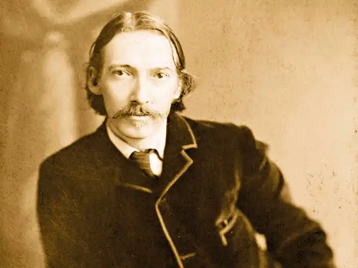
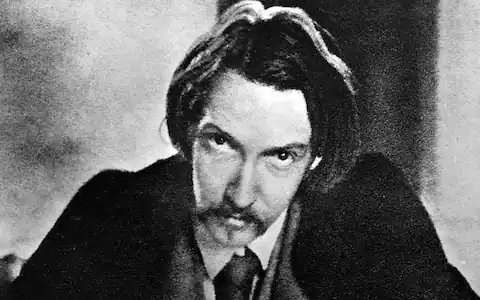
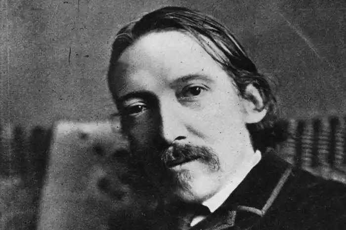
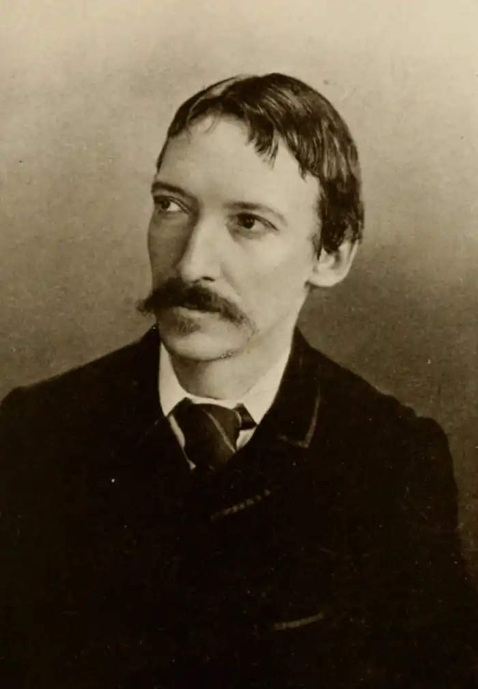

РОБЕРТ ЛЬЮІС СТІВЕНСОН
(1850-1894)
Англійський письменник, засновник і теоретик неоромантизму, літературний критик, поет, шотландець за походженням, Роберт Льюіс Стівенсон народився 13 листопада 1850 року в столиці Шотландії, "місті вітрів" Единбурзі. По материнській лінії він походив зі стародавнього шотландського роду Белфурів. Дід і батько його були відомими морськими інженерами, будівельниками маяків, інший дід був пастором. Його мати, Маргарет, з юності страждала туберкульозом і змушена була майже цілком передоручити слабкого здоров'ям сина турботам няньки, Алісон Каннінгем. Каммі, так няньку називали в родині, була жінкою неабиякою. Вона мала чудове почуття гумору, була обдарована уявою і чималим талантом оповідача. Саме її манеру декламувати вірші мимоволі перейняв майбутній письменник. Каммі мала такий авторитет у будинку, що вибачення за провини маленький Льюіс просив у неї, а не в батьків. Однак життєрадісність в ній поєднувалася з набожністю, любов до віршів Роберта Бернса — із щоденним звертанням до Біблії. Ряд віршів, таких як "Я був гарним цілий день" чи "Такий порядок", що їх Стівенсон включив до збірника, перейняті тими поняттями, що Каммі вселяла йому, коли він був дитиною. Чи могла благочестива Каммі припускати, що дивну нервозність хлопчика спричиняють її розповіді про грішників, які горять у вічному полум'ї? "Релігійні страшилки й жахи", як назвав їх у своїх спогадах сам Стівенсон, призводили до того, що він боявся заснути, бо йому здавалося, що уві сні Бог може спровадити його до пекла. У ті довгі ночі, коли Льюіса доймав кашель, Каммі несла його до вікна, щоб показати ніч, зоряне небо й світло у вікнах тих, хто "теж хворіє". Няньці, за його власним визнанням, Стівенсон був зобов'язаний тим, що став письменником. Вона допомогла йому розвинути свою природну здатність до творчості, стала тим товаришем, якого слабка і хвороблива дитина була позбавлена. На третьому році життя він перехворів на бронхіт. Ця хвороба потім давалася взнаки упродовж усього його життя і призвела до ранньої смерті. Єдина, вкрай хвороблива дитина, він подовгу був прикутий до ліжка через хворі бронхи, у нього розвинувся туберкульоз, і він ніколи не почував себе повністю здоровим. До тринадцятирічного віку здоров'я хлопчика зміцніло, і його віддали до закритої школи. Поїздки Шотландією під час літніх канікул залишили глибокий слід у душі хлопчика: історії про корабельні аварії, розповіді про бурунів, гірські вершини живили уяву майбутнього письменника. Стівенсон пристрасно покохав рідний край, його природу й історію. Пізніше він напише про Шотландію оповідання й нариси, вірші й романи, оброблятиме народні повір'я. У сімнадцять років Льюіс вступив на юридичний факультет Единбурзького університету, а в 1875 році закінчив його. Він багато подорожував, і під час подорожі на південь Франції пише дорожні записки, з яких починається список його публікацій. У 1866 році вийшла перша книжка Стівенсона — "Пентландське повстання". Світова слава прийшла до Стівенсона після виходу роману "Острів скарбів" (1883). З 1876 року в його життя ввійшла Фенні Осборн. Коли вони зустрілися, їй було тридцять шість років, вона жила з дітьми окремо від чоловіка. Стівенсону було двадцять шість років, коли він запропонував Фенні розлучитися з чоловіком і вийти за нього заміж. Фенні була американкою, жінкою вольовою, розумною і практичною. Завдяки її намаганням сталося повне примирення батька з сином (батько негативно ставився до богемної поведінки сина в студентські роки). Родина спочатку була проти їх одруження, але палкі почуття Льюіса до Фенні перемогли. Він сам приїхав до неї в Америку, де вони одружилися. Після смерті батька Стівенсон із сім'єю переїздить до Америки, подорожує південними морями. Ця подорож повертає його до життя, він добре почуває себе, багато працює фізично й сидить за письмовим столом. У 1889 році, підчас подорожі південними морями на борті яхти "Каско", Стівенсон написав роман "Власник Баллантре". Утім же 1889 році родина Стівенсонів придбала ділянку землі на острові Уполу (архіпелаг Самоа), де письменник, який страждав на важку форму туберкульозу, жив до кінця своїх днів. Третього грудня 1894 Стівенсон помер від крововиливу в мозок. Не тільки загадкові голоси моря і трагічні шотландські легенди, з ними разом дуже рано ввійшли в душу Стівенсона й високі моральні принципи. Під плащем вільного бунтаря ховалася вимоглива совість мораліста. Дитинство цього шукача пригод було затьмарено важкою хворобою легень, що переслідувала його все життя. Поруч з ним завжди були відкриті "двері смерті", як завжди він сам про це говорив. Бранець "ковдрової країни" вирушав у подорожі на хвилях своєї неприборканої уяви. Але романтика долі повела цього тендітного й безстрашного мрійника, прозваного друзями "ельфом", у далекі мандрівки, в екзотичні краї, де йому було легше дихати. "Школу Стівенсона" проходять з дитинства. Першою зустріччю з поезією для маленьких англійців давно став його "Дитячий квітник віршів", а улюбленою книжкою всіх поколінь в усьому світі — "Острів скарбів". Можливо, це одна з причин його надзвичайно високої популярності. Ім'я Стівенсона згадується на сторінках найрізноманітніших видань — у тому чи іншому контексті — постійно, а не тільки у зв'язку з ювілейними урочистостями. "Острів скарбів", що народився з намальованої разом з пасинком карти, і "Дивна історія доктора Джекіла і містера Хайда", що з'явилася уві сні й породила безліч кінематографічних версій,— найбільш відомі твори Стівенсона. Чистота юності й звабна привабливість зла — ці психологічні й моральні контрасти відкрив Стівенсону Достоєвський, який справив на нього дуже глибоке враження ще в юності. Неперевершений стиліст і майстер літературної гри, Стівенсон творив під девізом "Живу я словом!". Честертон, який вважав його великим письменником, зазначав: "Скрупульозна точність, з якою він підбирає слова, нагадує вивіреність математичної формули". Стівенсон є засновником і теоретиком такого відомого напрямку в літературі, як неоромантизм. Гостро відчуваючи суперечності між реальністю і мрією, він шукав у звичайному надзвичайне, героя в простій людині. Подорожі, пригоди, небезпеки потрібні для того, щоб надати життю яскравість і повноту, прорвавши монотонність буднів, побачити таємницю і красу світу. Письменник утверджував мужній оптимізм і віру в цінність добра, мав юнацьку романтичну спрямованість до прекрасного. Розглядаючи літературну професію з морального боку, Стівенсон підкреслював, що письменникам необхідно прагнути до правди життя, щоб людина "не вважала себе ангелом чи чудовиськом; не сприймала навколишній світ за пекло; не дозволяла собі уявляти, начебто всі права належать її касті чи її батьківщині". Ця людина-легенда, яка прожила всього сорок чотири роки, навіть зі своєї біографії зуміла створити захоплюючий роман. Зборознивши на вітрильному "Срібному кораблі" південні моря, він навіки знайшов свій "острів скарбів" на Самоа в Тихому океані. Завдяки Стівенсону цей далекий острів став духовним центром і місцем літературного паломництва. Він помер там надто молодим і надто улюбленим. Туситала — оповідач історій (так нарекли його віддані самоанці) похований місцевими жителями на вершині гори Веа, як він провістив у своєму поетичному "Реквіємі". Рядки "Реквієму" викарбувані на надгробній плиті. Серед творів Стівенсона є його чудова поетична книжка: "Дитячий квітник віршів". Вірші, що ввійшли до неї, були створені ним під час загострення хвороби, на межі життя і смерті. Стівенсон лежав у темній кімнаті, і йому було заборонено рухатися і говорити. З моторошної пітьми безмовності душа його спрямовується в райський сад дитинства, де людина ще безневинна, прекрасна і вільна. Дитячі фантазії і сни з візіонерською виразністю оживають у цих музичних віршах. Цей збірник суто особистих віршів зміг пережити не тільки всі вигадливі перебіги літературної моди, але й глобальні військові та політичні потрясіння. Стівенсон одним із перших звернувся у своїй ліричній поезії до світу дитинства й проголосив його найбільшою цінністю. Ця невелика книжка, сповнена внутрішнім світлом, вплинула на весь простір англомовної літератури. Любов і смерть, дух і плоть, злети й падіння душі, розмова з Богом на краю буття — основні теми його лірики. Життя для нього — зустріч і прощання з любов'ю, радість і праця. Вірші збірника Стівенсона "Підлісок" знайомі українському читачу ще менше, ніж його так звані вірші для дітей. Початок йому було покладено відразу після закінчення роботи над збірником "Свистульки". "Я зробився поетом, працюю і працюю над віршами, так що до сорока років напевно видам поетичний збірник",— пише він товаришу в травні 1883 року. І через чотири роки збірник дійсно виходить. Назву для нього Стівенсон запозичив у сучасника Шекспіра, поета Бена Джонсона, який писав вірші з будь-якого приводу. "Мої вірші не ліс, а підлісок,— говорив сам письменник, оцінюючи свою роботу,— але в них є зміст і їх можна читати". Поезію Стівенсона читають у нас менше, ніж його прозу, його вірші перекладали Брюсов і Ходасевич, Балтрушайтіс, Бальмонт і Мандельштам. Найбільше визнання здобула його балада "Вересковый мед" у блискучому перекладі Маршака. Пізніше перекладали його А. Сергєєв, І. Іванівський А. Кузнецов та інші. "Вересковий трунок" "Вересковий трунок" написаний за галлоуейською легендою про часи, коли король шотландський громив у боях піктів і завоював їхні землі. Цей край був славнозвісний своїм чудовим медвяним напоєм, виготовленим з вереску, що квітнув по всіх схилах. На фоні чудового опису цвітіння вереску розгортаються страшні події: знищено майже все населення цієї славної країни. Але завойовникам нічого не жалко, їм бракує лише чудового медвяного напою серед буяння квіту вереску. Ось нарешті знайдено живими останніх двох жителів,— батько з десятирічним сином. Завойовники вимагають у них рецепт. У своїй зухвалості вони навіть і помислити не можуть, що ці люди здатні заплатити життям за таємницю свого народу, яку він зберігав упродовж віків. Глибоко вражає страшний вчинок батька, котрий майже саморуч занапащає свою дитину (він наказав скинути хлопця зі скелі, щоб той, бува, не викрив таємниці). Але ми розуміємо, що навряд чи хлопчик залишився б живий після того, як вороги дізналися б від нього цю таємницю. Тому вчинок батька — це вирок зухвалому вторгненню завойовників, які винищили все населення, але не скорили душі цього народу. ОСНОВНІ ТВОРИ: романи "Власник Баллантре", "Острів скарбів", "Дивна історія доктора Джекіла і містера Хайда", збірка віршів "Дитячий квітник віршів", балада "Вересковий мед". ЛІТЕРАТУРА: 1. Дьяконова Н. Я. Стивенсон и английская литература XIX века.— Л., 1984; 2. Олдингтон Р. Стивенсон: Портрет бунтаря.— М., 1985.